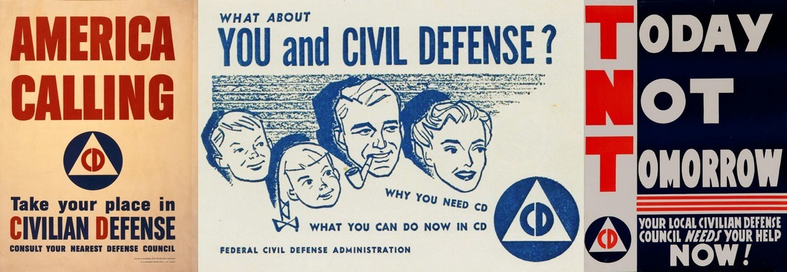

What You Do With It
- Warn others of danger by tapping the map, creating an alert for others to see.
- Add comments, photos, video, or other attachments by tapping on an alert.
- Get notified of new alerts near you or on your current map.
- Share to social media, text, or email.
Topics
Control what topics are shown on the map by simply touching the topic labels to toggle them on and off.
You can add or create your own by typing them into the "add topic" box. If your text begins with an emoji, that will be used as the marker in the map.
The red "radio button" next to a topic name indicates that it will be the initial topic for a new alert you create by touching the map. You can also change the topic of an alert you create by touching the topic name in the alert-conversation popup.
Sharing
Every alert you make will be immediately visible to anyone with the app who is looking at that point on the map. Every reply you make will be immediately shared with anyone looking at the same alert.
You can use the share button to pass a link and message to those that may not yet have the app. The button appears on the map, at the top of an alert-conversation display, and next to each reply, and it shares whatever the button appears with.

Options
The app's "CD" button gives you control over notifications, how you appear to others, and updates.

Broadcast Safely
Resist Tracking
- You cannot be identified as a person because there is no login, sign-up, or accounts. No phone number or email is used. There is no app store logging downloads. Users can choose to let others recognize them over multiple interactions — without divulging their actual identity.
- It is extremely difficult to identify your IP address or network patterns, because alerts are distributed phone-to-phone over a peer-to-peer network.1
- Messages are signed by the sender, sent directly through the network, or through Apple or Google's messaging service without identifying the app, topic, sender, or contents.
- Each alert disappears everywhere on the network after 24 hours. There are no collected records of messages, comments, or requested topics1, and this is not an archive or long-term storage system.
Resist Censorship
- No user can be censored because there are no accounts. No one can steal your account information because there isn't any.
- No content can be censored, there is no central organization who controls the network or has power to alter content.1
Resist Takedown
- No app store can block Civil Defense — the app is just a web page.
- Taking down web servers or domain names cannot block access for those who already have it, because the app caches everything it needs on first use. The open-source code is available so anyone can host an alternative mirror.
- There is no back-end server or data center to take down. All alert data is entirely peer-to-peer. All mirrors share this network: a post on civildefense.io appears on the mirror at ki1r0y.com and vice versa.1
- Blocking network traffic is extremely difficult, because the low-level data is identical to video conferencing traffic.1
- Civil Defense is highly resistant to Denial of Service attacks.1 However, it does require a working Internet, and does not by itself offer any protection against a complete Internet shutdown.
The Bigger Picture
The Civil Defense runs on the Axona network1. Both are free and open source.
Axona is a modern descendant of the old peer-to-peer networks such as Napster. It has a unique self-healing routing mechanism that uses neuron learning techniques to find the best way to distribute alerts. It is analogous to TOR (The Onion Router), but designed from the ground up to run in mobile and desktop browsers.
We are also developing a comprehensive quantum-ready cryptography system that will add private-groups for Civil Defense and any software on the network. We believe there are many applications where developers, users, and the public all benefit from open software and secure, decentralized networks — without app stores, servers, or data centers. Beyond Civil Defense, we are also developing large-scale multiuser collaboration and Inclusive Instant Payment Systems.
1: Coming in Fall, 2026
